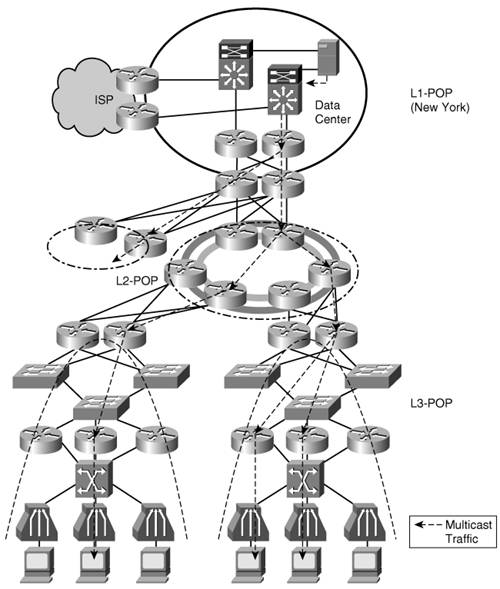

Advanced Services Design and ImplementationWith its network enabled to provide IPv6 unicast connectivity, RTPCom can now increase and refine its service offering. It can enable its network to support IPv6 multicast for content distribution and it can optimize its network to better support time-sensitive applications such as voice and video through QoS. Both of these technologies are new to RTPCom because neither has been used with its current IPv4 service. They will imply additional costs in terms of deployment, operation and training. The business models for the services they enable will most likely see further development and improvement. Nevertheless, RTPCom is committed to building a multi-service-capable network that supports near term opportunities such as Triple Play as well as longer-term ones that will be created by IPv6. Content DistributionIPv6 MulticastRTPCom considers CD as one of the most promising growth strategies. It will imply a one time, minimal charge for enabling its infrastructure to support multicast while being able to easily increase revenue per-access line thereafter. This revenue increase is developed in collaboration with the content provider by offering more video and music premium channel packages. RTPCom expects that the popularity of these services will lead to an increase in its customer base. This scheduled programming is offered through Video and Audio streams, each mapped to an (S,G) multicast group. The content will use various digital compression mechanisms that have different bandwidth requirements. The applications deployed by RTPCom and its partner content providers will have the following characteristics (Table 14-9).
The bandwidth consumption is particularly relevant at the access line level. Users register to one or multiple multicast available groups based on their service subscription. The number of channels that can be accessed simultaneously does depend on the downstream bandwidth available on the access line. RTPCom will shape the customer traffic based on two profiles: basic and premium. The basic profile is part of the regular subscription, whereas the premium profile comes at an additional cost. These aspects of bandwidth management are discussed further in the QoS section of this chapter. Note Service will have to be advertised under the disclaimer of availability. The program packages offered will have to be adapted to bandwidth availability. Some DSL (IDSL, for example) services will not be able to support some or even all video streams. IPv6 Multicast Service DesignThree major elements are relevant to deploying this service:
The selections made for each of these elements shape the service design. Content ManagementThe video and audio programming is managed by the content provider. It is stored on and distributed from dedicated servers that are located in RTPCom's L1 POP data centers. This approach simplifies the multicast deployment because all the relevant elements, sources, and listeners are contained within this single domain. RTPCom assigns to each content provider a set of multicast groups and a prefix for its servers. With this information the content provider puts together a programming mapping that it delivers to RTPCom. As an example, content provider X was assigned:
Table 14-10 shows the way content provider X mapped its programs to the (S,G) groups.
Note The group addresses used for the multicast service do not have to be globally unique because the service is contained within RTPCom's domain. Source Specific Multicast (SSM) group addresses are used because of the deployment model selected (see the "Content Transport" subsection). For redundancy purposes:
Note RTPCom decided to install servers in each L1 POP for the national programs to avoid having significant multicast traffic crossing the backbone. The multicast traffic of these programs is not routed between L1 POPs. However, this is not a strict requirement; it represents an optimal way to use the network core resources. Gigabit or 10 Gigabit Ethernet links are available between RTPCom's data centers and the content providers to facilitate fast content updates. RTPCom deployed the Cisco MDS9000 series multilayer SAN switches in the data center for intelligent storage-management. The MDS900 supports IPv6 starting with release 3.0 of the SAN-OS. Note Table 14-10 shows an example of program to (S,G) mapping that was built based on the available addresses and some redundancy considerations (dual servers in the same L1 POP for local programs or a server in each L1 POP for national programs). This approach does not take into consideration the need to load balance the multicast traffic (see Chapter 6, "Providing IPv6 Multicast Services"). RTPCom can make recommendations to the content providers regarding the server address selections based on an engineering study of load balancing over the multiple paths available in its network. Content TransportIn the context of this service, the multicast traffic is always flowing from the servers in the data centers to the users at the access layer. The appropriate and simplest way to deploy this multicast service is in a Source Specific Multicast (SSM) model as described in Chapter 6 of this book. Figure 14-11 depicts the operation of the service. Figure 14-11. Multicast Service Operation in RTPCom's Network The multicast group addresses assigned to the content providers are SSM specific FF3E:X::1FF3E:X::F. The multicast routing protocol used is PIM-SSM and this implies minimal provisioning requirements. BGP and OSPFv3 provide unicast reachability of the multicast servers. With the content servers hosted by RTPCom, the multicast domain coincides with its network. This makes it easy to contain the traffic by blocking multicast at the network edges. Customer InterfaceOn the access interfaces, MLDv2 is used to manage users joining and leaving the multicast groups. RTPCom provides one or multiple set-top boxes to service subscribers and they are using MLDv2 for their operation. Users can also receive the multicast streams on PCs that have MLDv2-capable players. The program to (S,G) mapping is available to subscribers on a personalized webpage provided by RTPCom along with all information pertinent to their profile. Note Enforcing the use of MLDv2 provides RTPCom with some level of control over the types of customer devices used to access the multicast service. At the time of this writing, there are few stacks on the market that support MLDv2. For this reason, it is likely that RTPCom's customers will be able to request multicast streams only through the set-top boxes it provides. The manufacturer of these devices used a BSD implementation of MLDv2. The other important aspect of the customer interface is the method of controlling access only to subscribed services. RTPCom decided to roll out the service with the help of the MLD access control feature. Customers are charged monthly for the programming package they signed up for. The subscription provides them full access to all video and audio channels in the package. At the same time RTPCom is evaluating the MLD AAA feature for its potential to simplify the provisioning process. MLD AAA also provides a mechanism to charge the users at a more granular level in terms of programs accessed or usage time. IPv6 Multicast ImplementationThe first step in the implementation process is to enable IPv6 multicast on all routers in RTPCom's network. This is easily done with the global command ipv6 multicast-routing. It automatically enables multicast forwarding, PIM-SSM and MLDv2 on all IPv6 interfaces. These are most of the protocols and features needed in the deployment. Note At layer 2, MLD snooping is a feature that could be enabled to optimize the service on the access layer switches. In the case of RTPCom, this is not generally applicable since it is using dedicated VLANs for each subscriber and there are no listeners connected to aggregation switches. The second step in implementing the multicast service is that of making the server addresses available throughout the network for Reverse Path Forwarding calculation. To advertise the prefixes for this purpose from the Data Centers to the L2 POPs, the IPv6 multicast address family has to be added to the existent BGP configuration. For the New-York data center in Figure 14-9, the relevant addition to the configuration of router NY-D-0-2 is shown in Example 14-7. Example 14-7. IPv6 BGP Multicast Configuration of Router NY-D-0-2
The two neighbors are the TOP-RRs in the Denver and Atlanta L1 POPs. Prefixes 2600:A002:00DD:1000::/64, 2600:A002:00DD:2000::/64, and 2600:A002:00DD:3000::/64 are advertised for the three existent content providers. The same address family is configured on all L1 POP routers that provide access to the network backbone, on all RRs and on all L2 POP routers that are the gateways to the network backbone. OSPFv3 takes care of advertising the server prefixes the rest of the way down to the access routers. The various subscription options marketed to the customers have to be reflected into access lists that will control user access to programming. For example, one of the profiles (Premium1) offered by content provider 3 to users is shown in Table 14-11. The subscriber has access to all basic national and local programs and all Premium 1 national channels, both audio and video.
The access list reflecting this profile is CP3-Premium1, as shown in Example 14-8. Example 14-8. IPv6 Multicast Access Control Configuration for the CP3-Premium1 Package
When a user subscribes to the Premium1 package provided by content provider 3, this ACL is used with MLD to control the programs that are available to the user. This is shown in Example 14-9. Example 14-9. Applying the CP3-Premium1 Profile to a Subscriber
RTPCom configures the ACLs for all profiles on an access router as soon as it receives the first multicast service request from a subscriber on that router. The profiles are applied to access lines based on subscriptions. Note After IPv6 multicast routing is enabled on the access routers, MLDv2 is already running on all interfaces, so a subscriber can potentially join a multicast group if he knows the (S,G) addresses. For this reason, the default state of the access lines should block MLD joins. After multicast is enabled on an access router a Block-mcast ACL denying all traffic should be configured and used with MDL access control on all customer facing interfaces. When a user subscribes to the multicast service, the access control is modified according to the user profile. The steps that are followed in deploying IPv6 multicast are summarized in Table 14-12.
Attesting to the simplicity of deploying SSM, the minimal configuration shown so far in this section is sufficient to provide multicast content to customers. However, the deployment can be further optimized. One important implementation aspect is that of controlling the multicast domain. RTPCom does not want the offered multicast service to leave its network, and it does not want other multicast traffic to enter it. The easiest way to enforce this policy is to not enable IPv6 multicast processes on the data center routers that provide connectivity to the outside world. This approach eliminates in principle the need for other multicast traffic control measures. Access lists could be used on the outbound links to reinforce this policy. They are rather straightforward because they would block all multicast traffic in or out. However, care has to be taken to make sure that link-local multicast traffic is allowed through for basic operation of IPv6. Multicast address scoping makes it easier to differentiate between link-local and other types of multicast traffic. This simplifies the ACLs. Another item to consider in terms of optimizing the deployment is the possible need to improve subscriber's perception about channel zapping. Channel zapping refers to the rapid switching between channels that inpatient and bored users are inclined to do. When the customer base is significant, statistically there is a good chance that most of the popular channels are drawn down to the access layer by registered listeners. In this case, there is little delay when switching between channels. In the early phases of the deployment, however, it is likely that a user's channel selection would have to trigger a set of PIM join messages toward an L1 POP data center, which might imply a longer delay. RTPCom is addressing this issue by "drawing" the multicast streams to a convenient layer of the network (L2 POPs, for example) with the help of static joins. This will reduce the delay of joining a channel and therefore the delay during channel zapping. This optimization would come at the cost of some backbone bandwidth use. Quality of ServiceUp to this point in the evolution of its network, RTPCom did not concern itself with IP QoS. Despite an access layer design that is characterized by clear oversubscription, RTPCom's customers and their typical use of the access service (Internet access over IPv4) do not complain of relevant bandwidth constraints. At the current levels of subscription, the FTTH service is particularly less prone to resource contention. The xDSL service on the other hand has to be more carefully managed. To customers that have access to ADSL service, RTPCom provides two levels of subscription: a 3-Mbps downstream service and a premium, more expensive 5-Mbps service. These access profiles are enforced with the help of ATM-based traffic shaping. QoS Service DesignWith the expansion into newer services, particularly delay-sensitive ones such as VoIP, video, and audio, RTPCom has to reevaluate its network resource management approach. The backbone and aggregation layers are over engineered so they will not require changes. On the other hand, the access layer has to be enabled to handle the various types of traffic based on their specific requirements. For this reason, RTPCom decided to deploy IP QoS in this part of its network with emphasis on shaping downstream traffic. The traffic types under consideration in RTPCom's network are listed in Table 14-13.
RTPCom will use a DiffServ model to implement its QoS service. Customer traffic will be placed in three classes reflecting the types identified in Table 14-13. It will be marked and handled based on its specific requirements. Table 14-14 presents the QoS classes (see Chapter 5) deployed, their mapping to traffic, and where the marking occurs.
Class-based weighted fair queuing will be used on the access interfaces to control outbound traffic based on class membership. Fixed bandwidth will be reserved for the content traffic. Two profiles are made available to the customer:
The premium service enables the user to receive two or more video streams simultaneously. Each service comes with an additional 1 Mbps. This provides RTPCom with another revenue opportunity that is stimulated by increased demand for content. QoS ImplementationThe first step in the implementation of the service is making sure that the traffic is appropriately marked. RTPCom is responsible for marking the multicast and the Internet traffic. The IPv6 multicast traffic is marked (AF1) inbound on the interfaces that provide access to the content servers in the data centers of L1 POPs. Example 14-10 shows the relevant configuration of NY-D-0-2 which provides access, among others, to the servers of content provider 3 (2600:A002:00DD:3000::/64).) Example 14-10. QoS Configuration of Content Provider-Facing Router (NY-D-0-2)
The same policy is applied inbound on all interfaces that connect to content servers throughout RTPCom's network. In a similar manner, the IPv6 traffic received from USInternet is marked for Best Effort handling. RTPCom has no visibility (or much interest) in the IPv4 traffic which is wrapped inside the PPP and L2TP encapsulations. For this reason, it will not need to mark it, as it will be placed into default class. For the IPv6 Internet traffic, the relevant marking policy applied to NY-D-0-3 is shown in Example 14-11. Example 14-11. QoS Configuration of Internet Access Provider Router (NY-D-0-3)
The next step in implementing QoS is the definition of the traffic classes based on Table 14-14 (next to these three classes, one has to remember the existence of the default class), the policy definition and their application to the access lines. The relevant configuration for access router NY-10-12-16 is shown in Example 14-12. Example 14-12. QoS Configuration of Access Router (NY-10-12-16)
The classification is done based on the DSCP bits relying on the fact that all traffic is properly marked by the time it reaches the access layer. Two policies are shown for the two service profiles: basic and premium. The characteristics of these two policies are summarized in Table 14-15.
The parent policies shape the overall traffic for the subscriber. They are applied outbound under the PVC configuration for xDSL customers or under the subinterface for FTTH customers. Inbound policies can also be defined to shape the traffic coming from the customers. Note It is important to observe that RTPCom decided not to re-mark traffic that comes from its own customers. This implies a certain level of trust that will be monitored by RTPCom's network operations group. The steps of deploying QoS in RTPCom's network are summarized in Table 14-16.
| ||||||||||||||||||||||||||||||||||||||||||||||||||||||||||||||||||||||||||||||||||||||||||||||||||||||||||||||||||||||||||||||||||||||||||||||||||||||||||||||||||||||||||||||||||||||||||||||||||||||||||||||||||||||||||||||||||||||||||||||||||||